There are ③ ways to register
Registration
Pre-registration $35, Race day registration $40, Children six and under free.
Register on-line and pay with a credit card.
Start a fundraising page and have others pledge toward your fundraising goal.
Download a paper registration form to return to the Hospice office.
5K Run
One loop through the streets of beautiful and historic Leonardtown, MD.
Results
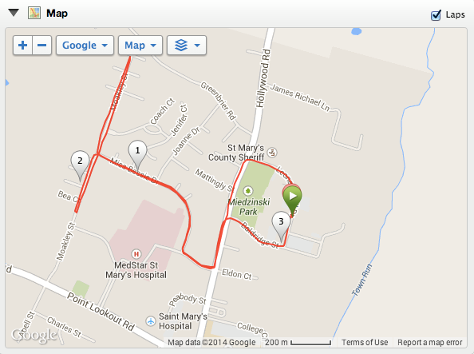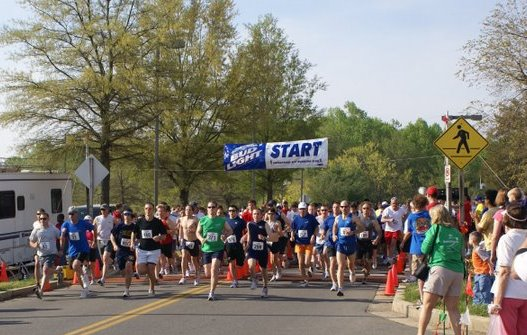
5K Run Turn by Turn Directions
- Leave Start on Leonard Hall Drive
- Left on Hollywood Road
- Right on Doctors Crossing Way
- Right on Miss Bessie Drive
- Right on Moakley Street
- Follow to end to turnaround cone
- Stay straight on Moakley until the next turnaround cone
- Right on Miss Bessie Drive
- Left on Doctors Crossing Way
- Left on Hollywood Road
- Right on Baldridge
- Left on Leonard Hall Drive to Finish
10K Run
One loop stretching around rural, country road course.
Fun Walk
One loop through the streets of beautiful and historic Leonardtown, MD.
Course Map
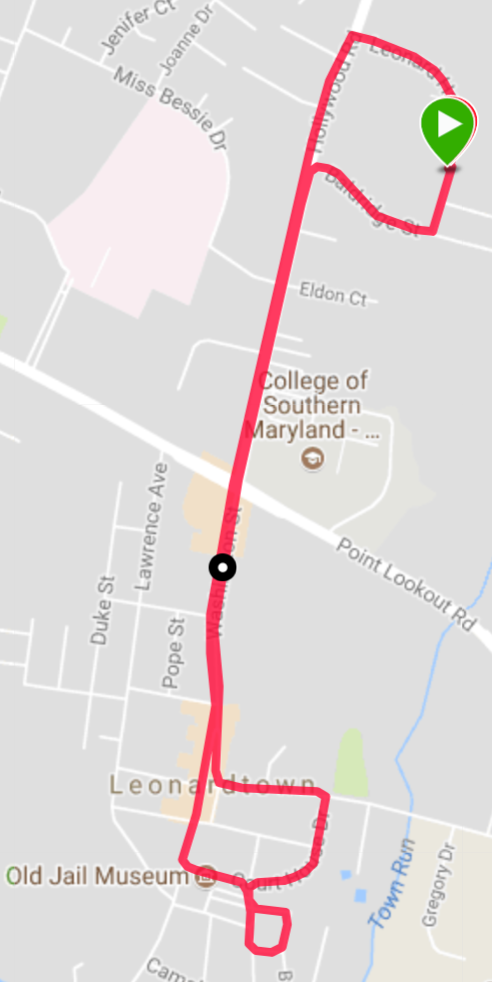5K Walk Turn by Turn Directions
- Leave Start on Leonard Hall Drive
- Left on Hollywood Road
- Continue Straight on Washington Street
- Left on Courthouse Drive
- Right on Camalier Drive
- Left on Tudor Place
- Left on Breton Bay Drive
- Right on Camalier Drive
- Right on Court House Drive
- Left on Fenwick Street
- Right on Washington Street
- Continue Straight on Hollywood Road
- Right on Baldridge
- Left on Leonard Hall Drive to Finish
Defender's Cup
A 5K Run Team Competition.
Results
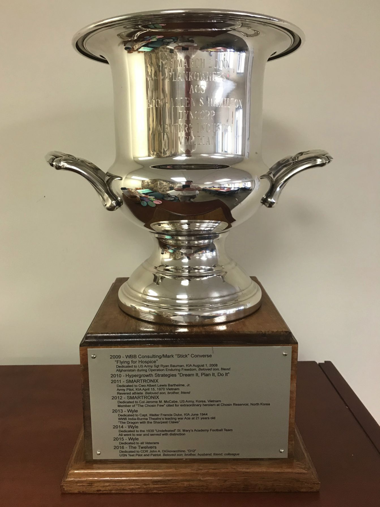Overview
A tribute to the men and women who work in support of our National Defense. A trophy sponsored by some of the Nations top Defense Contractors – companies that are committed to providing safety and security for our Troops and our Country in an unpredictable world.
Initially born out of appreciation of the Navy’s presence at the Patuxent River Naval Air Station in Southern Maryland- since its inauguration the Defender’s Cup competition has evolved into a popular and patriotic event competed for by both Military and Civilian teams from all over the region. The Defender’s Cup honors and commemorates the hard work, sacrifice and commitment of the men and women who Protect our Liberty, Guarantee our Freedom, and Safeguard our Future.
The winning Team will have their name and year engraved on a plate which is permanently attached to the trophy. In addition, the winning team is allowed to hold the trophy for one year.
Rules
This 5K Run Team Trophy competition is open to teams comprised of either Active/Retired and/or Reserve/National Guard Duty Military personnel (Army, Navy, Air Force, Marines, Coast Guard) Department of Defense (DoD) Civil Servants, Defense Contractor Employees and immediate family members who are amateur runners. CAC card, military identification, proof of employment and proof of identity for immediate family members will be required for application.
Teams must designate a Captains/POC who should contact the Defender’s Cup Coordinator to register their team for the event.
All teams must have at least 4 participants and there must be (at least) 1 female member per team.
An organization may field multiple teams.
The winning team will be determined by the fastest mean time of the teams top four runners in the 5K run event (must include the female entrant’s time).
5K Run Turn by Turn Directions
- Leave Start on Leonard Hall Drive
- Left on Hollywood Road
- Right on Doctors Crossing Way
- Right on Miss Bessie Drive
- Right on Moakley Street
- Follow to end to turnaround cone
- Stay straight on Moakley until the next turnaround cone
- Right on Miss Bessie Drive
- Left on Doctors Crossing Way
- Left on Hollywood Road
- Right on Baldridge
- Left on Leonard Hall Drive to Finish
Frequently Asked Questions
You have questions. We have answers.
The event is held at the St. Mary's County Governmental Center. The nearest address to the Start/Finish line is 23110 Leonard Hall Drive, Leonardtown, MD 20650
>
Sponsors
We couldn't have this event without the support of our
sponsors.
Find out how your company can become a sponsor.
Silver Sponsors ($2,500)

Bronze Sponsors ($1,000)

Friends of Hospice ($500)

About
A brief history of the Run & Fun Walk.
-
1st March 24, 1996
Our Humble Beginnings
The 1st Annual Maryland Day Run & Fun Walk was held on Sunday, March 24, 1996 at St. Mary's Ryken High School.
- 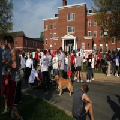
2nd March 22, 1997
On The Move
The Run & Fun Walk moves to it's current location at the Governmental Center in Leonardtown.
- 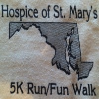
3rd March 21, 1998
undefined
Third time's the charm.

4th March 28, 1999
undefined
Maryland my Maryland.
- 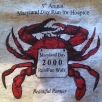
5th March 25, 2000
undefined
No Y2K problems here. Held on Maryland Day.
- 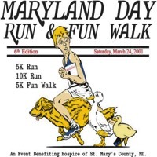
6th March 24, 2001
Saturday Evening Post
A new 10K run and a Norman Rockwell inspired logo for the 6th Annual Run & Fun Walk.
- 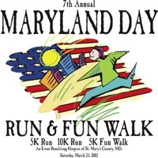
7th March 23, 2002
Our True Colors
2002 brought a patriotic theme as we remember the events of 9/11 and honor those who were lost.
- 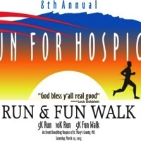
8th March 29, 2003
Going The Distance
We never run alone.

9th March 27, 2004
undefined
Running side by side.
- 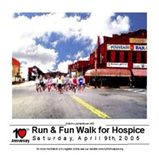
10th April 9, 2005
A New Spring
The Run & Fun Walk moves to April.
- 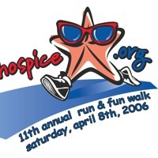
11th April 8, 2006
A Starfish is Born
The iconic Starfish logo makes its debut as the official brand of the Run & Fun Walk.
- 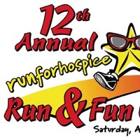
12th April 21, 2007
The Old Line State
Maryland flag inspired colors for this year's theme.
- 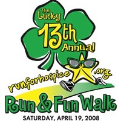
13th April 18, 2008
Lucky 13
Nothing but good luck for the 13th Annual Run & Fun Walk
- 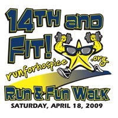
14th April 18, 2009
Feeling Fit
Working harder, getting stronger.
- 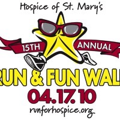
15th April 17, 2010
A Banner Year
Finish strong.
- 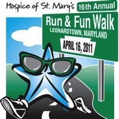
16th April 16, 2011
Golden Event
The 16th was held on the 16th. We celebrated by hitting the road.
- 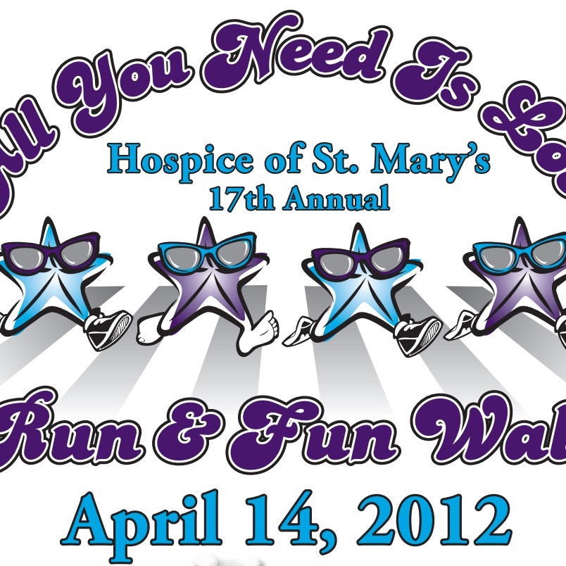
17th April 14, 2012
Love Is All You Need
A Beatles inspired theme from the Summer of Love.
- 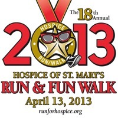
18th April 13, 2013
Award Winning
We thought we deserved a medal.
- 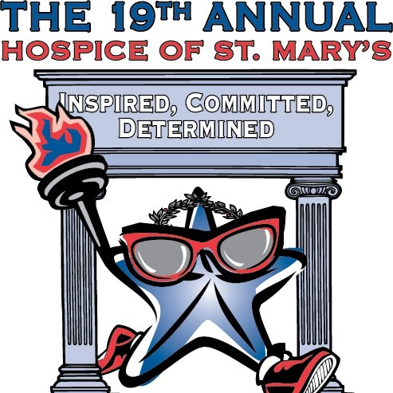
19th April 12, 2014
Carrying The Torch
Inspired by the Olympics we're going for the gold.
- 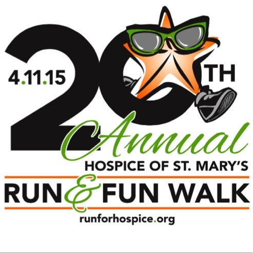
20th April 11, 2015
Hitting Our Stride
Celebrating 20 years.
- 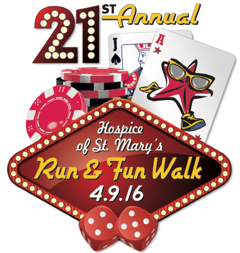
21st April 9, 2016
Viva Las Vegas
We got lucky with the weather but that's how we roll.
- 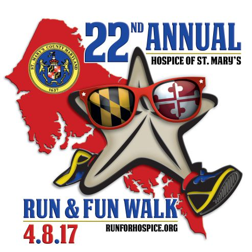
22nd April 8, 2017
Maryland Pride
Running for Maryland and St. Mary's County.
- 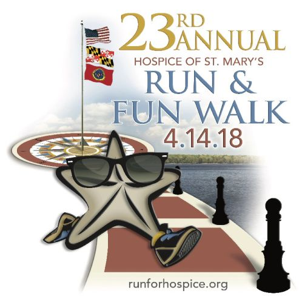
23rd April 14, 2018
A Wharf with a View
Celebrating Leonardtown's Scenic Waterfront
- 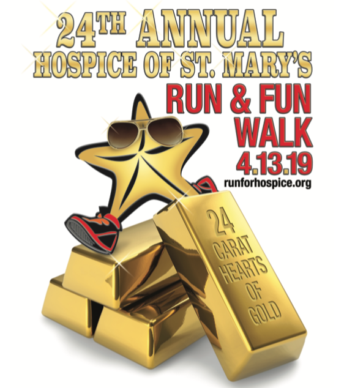
24th April 13, 2019
Solid Gold
Join us on April 13th for the 24th Annual Run & Fun Walk.
- 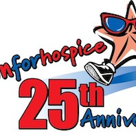
25th April 23, 2022
Fingers crossed...
Join us on April 23rd for the 25th Run & Fun Walk.
The Run & Fun Walk began in 1996 and has raised over $850K for Hospice of St. Mary’s County. 100% of net proceeds benefit Hospice of St. Mary’s in providing comfort, care and support of the terminally ill.
We are Southern Maryland’s biggest and best running event featuring our "World Famous Brunch", music and fun. We welcome children, strollers/baby joggers and pets.
Your presence at this event will make a difference.
2019 In Memory Of
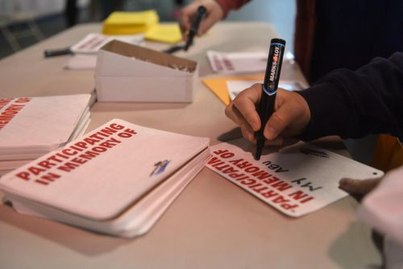Our Amazing Volunteer Team
Figuring it out as we go...
Emily Cantrell-Stagner
Jim Dicus
Laurie Lawrence
Jennifer Overstreet
Jeff Thomas
Jamie Thomas
Jeannette Wolter
You can check out any time you like, but you can never leave...